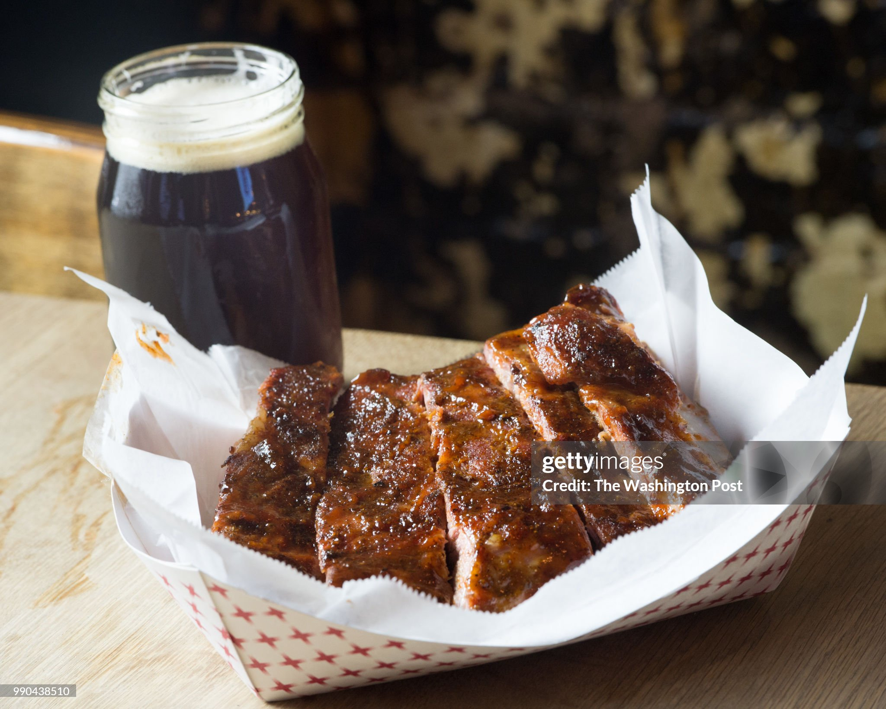

Home
Plum and Honey Glazed Ribs

Description
Pork ribs with Worcestershire, garlic, and plum glaze.
Access to a multipressure fryer and an induction stovetop is assumed.
Ingredients
- 1kg raw pork ribs
- 1 tsp smoked paprika
- 1/2 tsp ground allspice or cinnamon and nutmeg mix
- 1/2 tsp sea salt
- 1/2 tsp black pepper
- 150ml low-sodium chicken stock or vegetable stock or water
- 2 tbsp dark plum jam or blood plum jam
- 1 tbsp honey
- 1 tbsp Worcestershire sauce
- 1 tsp apple cider vinegar
- 1 garlic clove, finely grated
- 1 tsp Dijon or English mustard
Steps
- Rub the ribs thoroughly with the smoked paprika, allspice mixture, salt, and black pepper.
Place the steamer rack or trivet inside the inner pot, pour in the 150ml stock/water.
Arrange the ribs such that steam can circulate freely. Lock the lid and pressure cook for 22 minutes,
ideally at high.
- While the ribs steam, prepare the glaze: simmer the plum jam, honey,
apple cider vinegar, garlic, Worcestershire sauce, and mustard until the mixture bubbles.
The heat should be low to prevent burning the glaze.
-
Once the steaming is done, do a quick-release and drain the liquid. Take out and brush the ribs
with the glaze. Once done, air-fry the ribs at 190 degrees Celcius for 8-10 minutes, or until
caramelised and sticky at the edges.